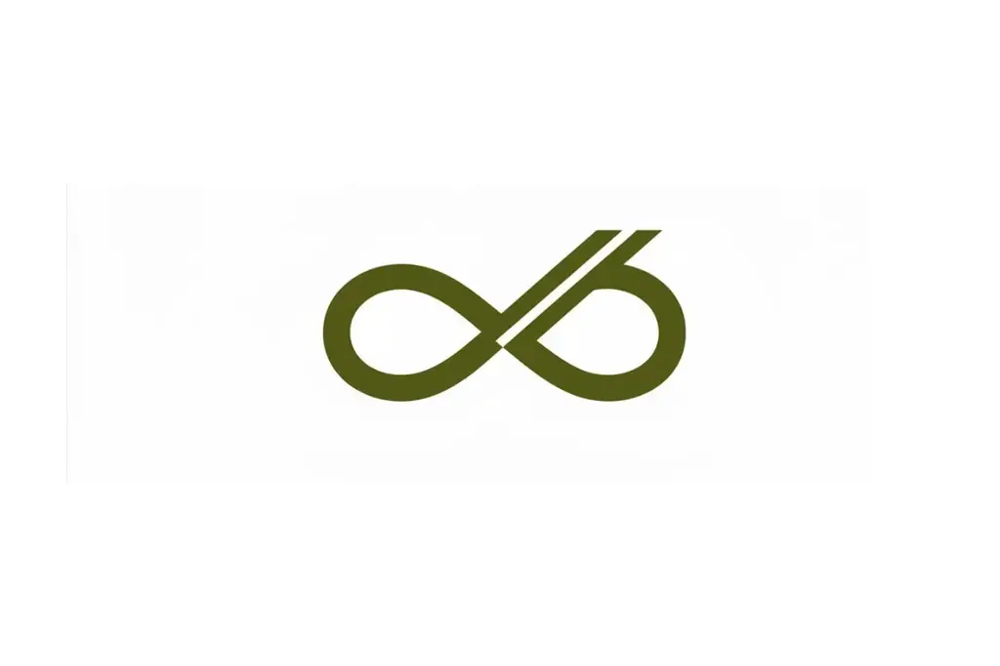
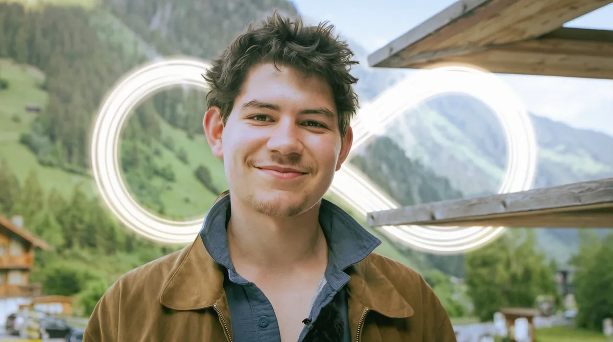

About
Mother Nature is a film production company from Munich, Germany.
Our documentaries explore environmental projects around the world — showing their real impact, the beauty of nature, and the fragile connection between humans and the earth. We tell stories that reveal what is happening to our planet — and what is still possible when people take action.


Hi, I'm Xaver Zimmermann.
I'm a nature filmmaker and storyteller based in Munich, and the founder of Mutter Natur Film. It would mean a lot to have you join us on this journey back to nature — through honest stories, real people, and real change.
Here's a little about why I do this: every project starts the same way for me — by listening. To nature, to the people living alongside it, and to the impact we're trying to make together.
Right now, Mutter Natur Film is a small team — I work closely with trusted collaborators depending on what each production needs.
Principles
We believe in real stories, not staged narratives. We show what is, not what sells. We believe that humans are not separate from nature, and that the way we see the world shapes how we act. Through honest storytelling, we aim to shift that perspective — because once we see differently, we begin to act differently.
We work with brands, organizations, and projects that want to create real impact.
Together, we tell stories that go beyond advertising — stories that are grounded in reality and built to last.
From documentaries to visual storytelling, we create films that connect people with nature and with each other.
Information
- Nature
- Environment
- Wildlife
- Climate
- Future
- Real-world change
- Human connection to nature
- Environmental organizations
- NGOs
- Research projects
- Foundations
- Sustainable companies
- Local initiatives
- Scientific institutions
- Filmfest Schleswig-Holstein — Die große Verbindung
- Kurzfilm Festival Mo&Friese — Die große Verbindung
- DOK Fest München — Wächter der Berge
- 22nd INKAFEST film festival — Wächter der Berge